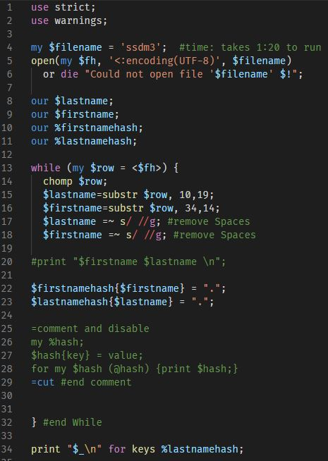
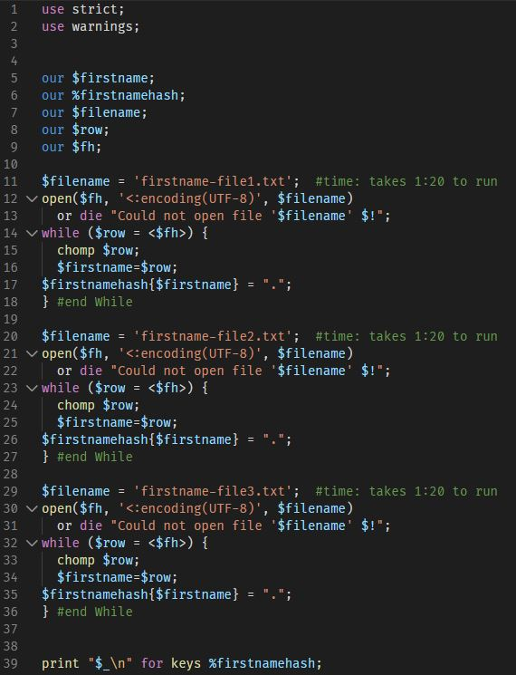
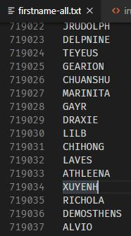
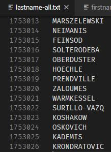
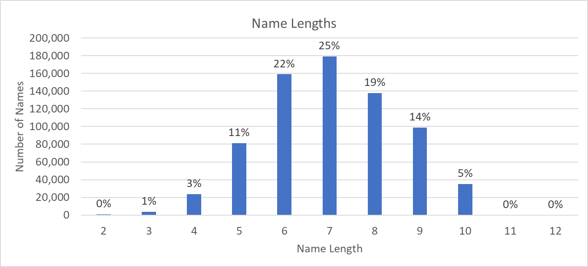
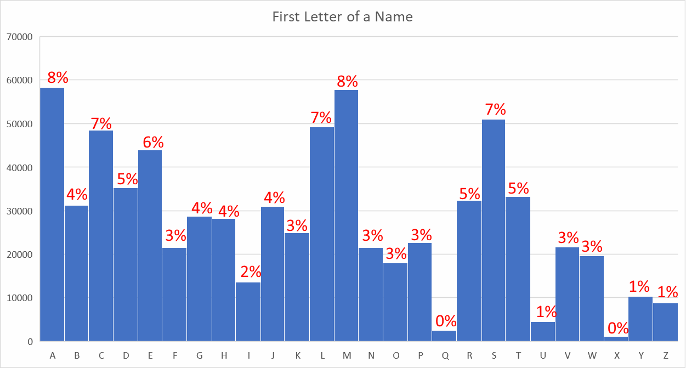

The Death Master Database is processed and the names are stripped out with PERL. 3 files, that total 8.25GB are processed with a perl script.

This program slurps in the file (line 4) and iterates over each line. we extract first and last name from each row (lines 15,16) and then push them into their own hashes (lines 22,23). At the end (line 34) we cycle through the hash for each element and toss it into a file.
this script is run 3 times, where line 4 is run on file ssdm1, ssdm2, ssdm3 with
perl program.pl > lastname-file1.txt
perl program.pl > lastname-file2.txt
perl program.pl > lastname-file3.txt
note the use of '>' from the command line to redirect the STDIO (screen) to a file so we don't have to write this stupid part in PERL.
then line 39 is changed to %firstnamehash and run again
perl program2.pl > firstname-file1.txt
perl program2.pl > firstname-file2.txt
perl program2.pl > firstname-file3.txt

now a quick script is run to join 3 of each file together. If you were on linux you could use cat probably, but on win10 we get to do it the hard way for those of us that haven't dove into powershell yet.
we run this script to join the 3 first name files together by first reading everything into a hash, and the putting the hash out in line 39. we run this with:
perl program3.pl > firstname-all.txt
now change lines 11, 20, and 29 to point to lastname files. and change change the names of all the variables to lastname if you want to be consistent and proper, or just ignore it - and run again as:
perl program4.pl > lastname-all.txt

We now have a file showing 719,037 unique first names! they arn't in alphabetical order, so we pop em over to excel for a quick tidy up and that seems to work well.

We now have a file for last names 1,753,026 lines, where each line is a unique last name. Well modern excel only fits just over 1 million lines so we will have to keep working the perl tools to get this chunked out and processed.
The results so far are the following, just for first names:

This shows 25% of the names are 7 digits in length. The data has been slightly processed in that I took the single character names out. I can't find the United States current naming rules, but I suspect the single letters A-Z are valid, but we ignore that for now, because its boring. The longest name is 12 characters long in the dataset.

of the ~720K first names in the death master database, 50k start with the letter 'L', and 7% start with the letter 'S'.